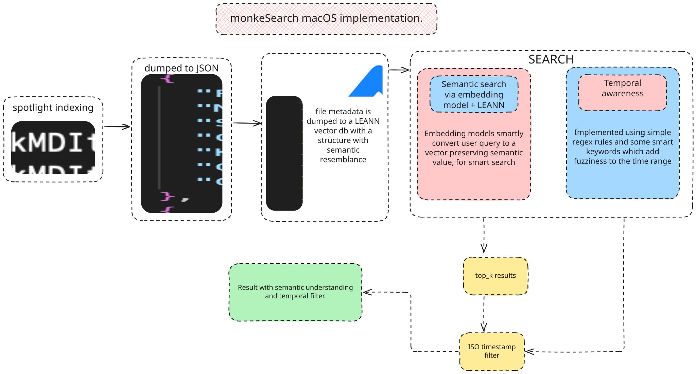
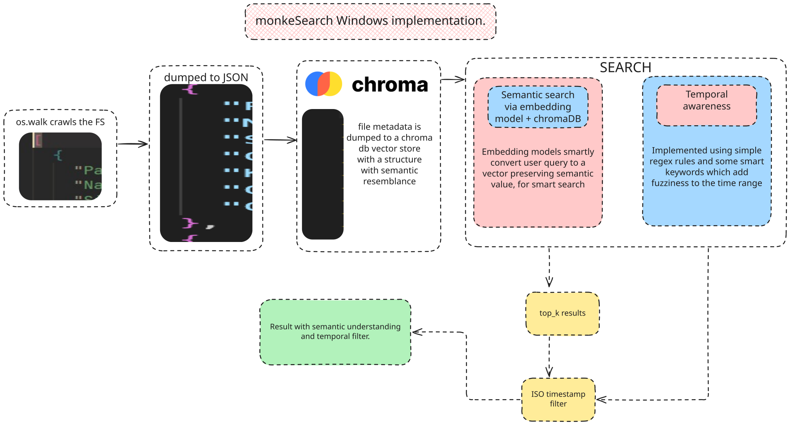
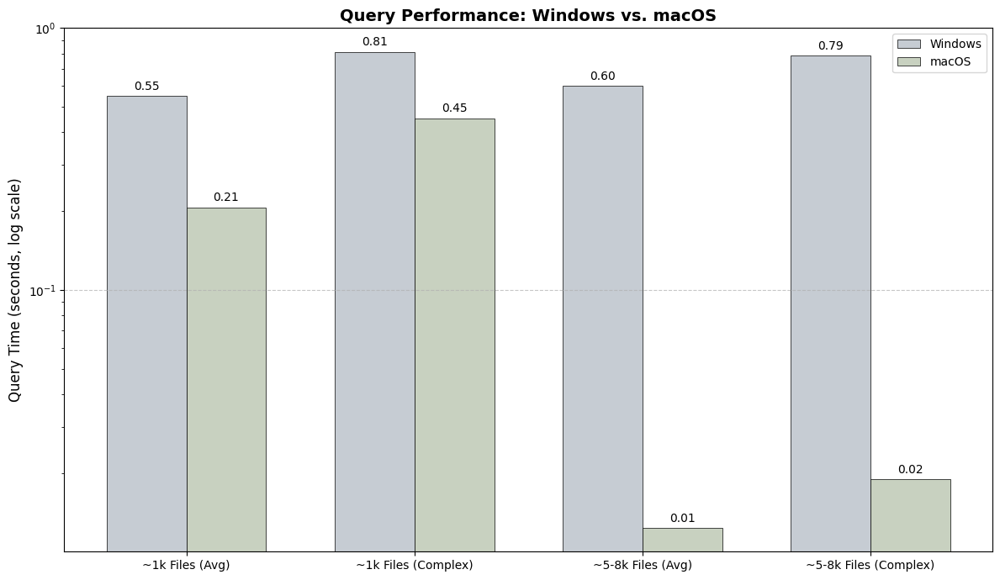
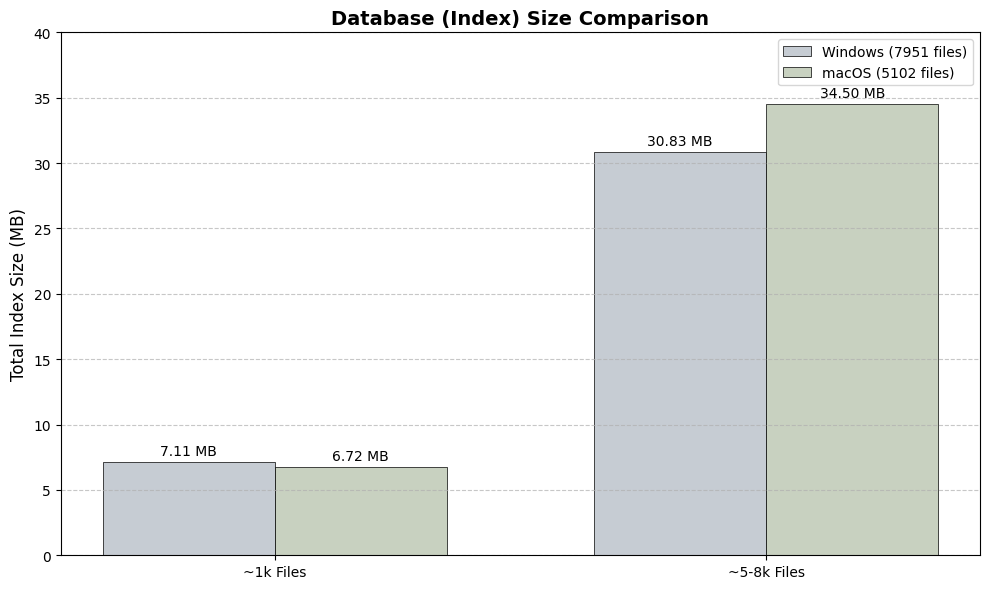
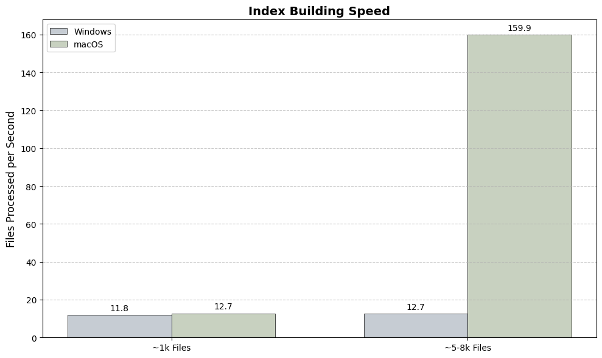
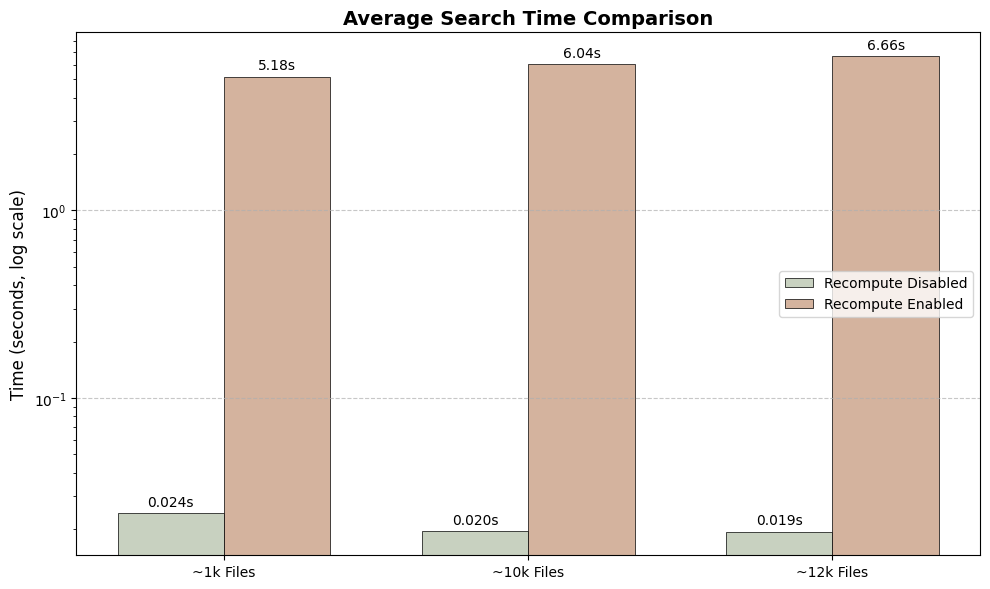
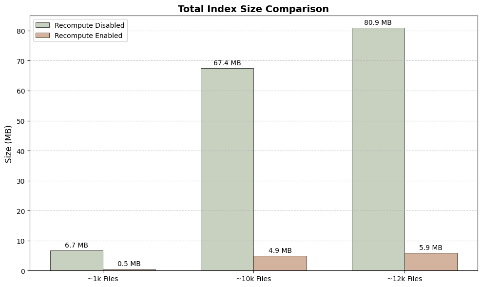
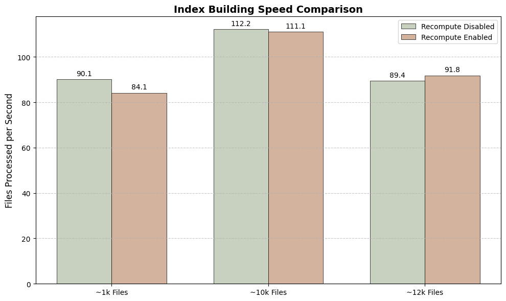

macOS LEANN recompute is enabled by default. Disable it for faster search at the cost of disk space.
monkeSearch is an open-source, offline-first desktop search tool that lets you find local files using natural language. Instead of relying on exact filenames, regex, or folder browsing, you just describe what you're looking for and when — the system finds it. Nothing leaves your machine.
Any natural language file search query can be broken down into three constituents:
file type (what kind of file — pdf, image, code, etc.),
temporal context (when — 3 days ago, last week, etc.), and
misc keywords (remaining context — project name, topic, etc.).
The main/dev branch uses a local LLM to extract these constituents and convert them directly into macOS Spotlight
query arguments. The vectordb branch achieves the same task using vector databases instead, making monkeSearch
cross-platform. Both approaches are fully offline.
The idea is simple: use a local LLM to convert a natural language query directly into arguments for macOS's built-in Spotlight search — no vector database, no embeddings index, no metadata dump. Just natural language in, structured OS-level query out, instant results back.
A user writes a query like "python scripts from 3 days ago". Stop words are stripped, then a local LLM
(like LFM 1.2B or our fine-tuned SmolLM2 135M, running via llama.cpp) parses the cleaned query and extracts structured
components using constrained JSON output:
{
"file_type_indicators": [{"text": "python", "extensions": ["py"], "is_specific": true}],
"time_unit": "days",
"time_unit_value": "3",
"source_text": {
"file_types": "python scripts",
"time_unit": "3 days ago",
"time_unit_value": "3"
}
}
The LLM understands that "python scripts" → .py, "images" → jpg,png,
"yesterday" → days,1, "last week" → weeks,1, etc. These extracted components are then
converted into NSMetadataQuery predicates — the same API that powers Spotlight and mdfind.
File types are mapped to UTIs via utitools and used as kMDItemContentTypeTree predicates.
Temporal data becomes kMDItemFSContentChangeDate date predicates; remaining keywords match against
kMDItemTextContent and kMDItemFSName. All predicates are combined with
NSCompoundPredicate and the compound query runs against Spotlight's existing index — results come
back instantly since macOS already maintains the index. There's no index to build, no embeddings to generate.
The LLM is the only "intelligence" layer, and the approach is safe by design (read-only, scoped
through Spotlight's own access controls).
Apple ships a built-in UTI (Uniform Type Identifier) hierarchy on every Mac — public.image covers
jpeg, png, gif, heic and more under one umbrella,
public.source-code groups py, js, cpp, etc.
The code crawls this hierarchy and intelligently decides whether to produce broad results (search the whole
public.image tree for "images") or filetype-specific results (search just
.py for "python scripts"), depending on how specific the LLM's extracted
file type indicators are.
For Agentic Use: The LLM-based implementation is particularly suitable for integration into larger AI pipelines and agentic systems. It provides a direct LLM-to-filesystem bridge through natural language without modifying any files, leveraging OS-level scoped safety through Spotlight. If you're building autonomous agents or LLM orchestration systems that need file discovery capabilities, this branch gives you that without the overhead of maintaining a separate index.
Many small models benchmarked on structured JSON extraction — file types, temporal parsing, and noise resistance across 80 test cases.
The vectordb branch achieves the same functionality using vector databases instead of a live LLM
at query time. This was built to make monkeSearch cross-platform.
Platform-specific architecture diagrams for the vectordb branch.


os.walk file system crawl and ChromaDB for vector storage and retrieval.
Benchmark results from the vectordb branch.

Query Time: macOS demonstrates significantly faster average search times due to its LEANN backend.

Index Size: On-disk size of the embedding database for different numbers of files.

Indexing Speed: How many files per second each system can process during the initial build.
Results from the vectordb branch.

Search Speed: Disabling recompute yields lightning-fast searches (milliseconds), while enabling it dramatically slows down queries (seconds).

Space Savings: Enabling recompute creates a tiny index (over 97% smaller), saving significant disk space.

Build Speed: The initial indexing speed is nearly identical, as the main workload (embedding generation) is the same in both modes.
macOS LEANN recompute is enabled by default. Disable it for faster search at the cost of disk space.
monkeSearch is an open source project. If you find it useful, please consider starring our repository on GitHub to show your support!
https://github.com/monkesearch/monkeSearch